Here are descriptions of some of the more interesting or significant changes made to the Eclipse Platform for the Kepler (4.3) release of Eclipse.
Plug-in developers will also be interested in the corresponding What's new document in the plug-in developer's guide.
Platform |
|
| Migrated to Lucene 3.5 | The Eclipse platform help system has migrated from Lucene 2.9.1 to Lucene 3.5. This change brings improved performance and many bug fixes in help search. Some old help system API related to Lucene has been changed or removed as part of this fix. Refer to the platform 4.3 migration guide for more details. |
| Detached windows with sash |
When you detach a view or editor into its own separate window, it now
has all the capabilities of a normal workbench window. They now support multiple stacks of
views separated by sashes with arbitrary layouts. The detached parts will remain synchronized
with the master window that they were detached from. This is especially handy for people developing
with two or more monitors, so they can spread views across several monitors and keep them synchronized.
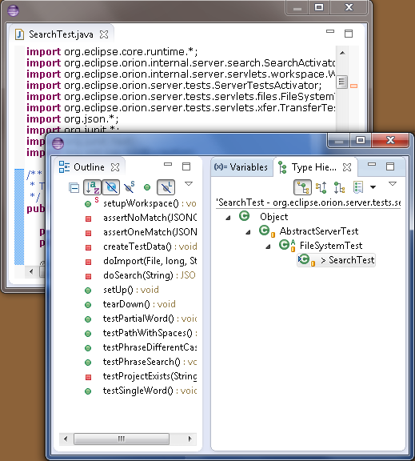 |
| Trim dragging |
You can now drag toolbars to reposition them.
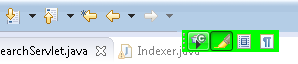 The perspective switcher can also be dragged to the left or right of the window and it will switch to a vertical orientation. 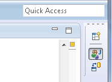 |
| Import nested projects |
The Import Projects wizard now has an option to continue searching for projects to import
recursively within any project it finds. This allows you to import physically nested projects
at the same time.
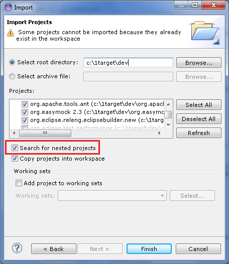 |
| Platform updated to Ant 1.8.4 | The platform has been updated to use Apache Ant version 1.8.4. To see what is new in version 1.8.4 you can check the Apache Ant what's new. |
| Option to omit -XstartOnFirstThread |
If you are launching an SWT program on Mac OS X, you can now selectively add / remove the -XstartOnFirstThread VM argument
in the event your VM does not support it. This option can be configured per launch configuration and is available on the standard Arguments
tab for Java configurations (Java Application, Eclipse, etc.).
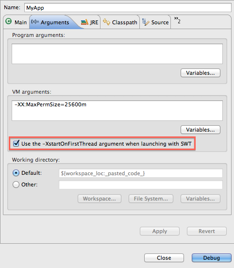 |
| Global preference to include exported entries during launching |
A new global preference has been added so you can only allow exported classpath entries to be used during launching. Previously, this
was only customizable per launch configuration on the default classpath entry on the Java Classpath tab. The new preference does not affect
launch configuration data, so no migration is needed.
The new preference can be found on the Java > Debug preference page. 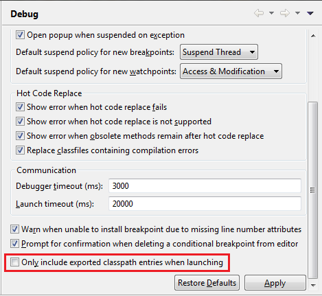 |
| Launch configuration dialog can show warnings |
Previously, contributors could only set an 'ok' or an 'error' state in their launch configuration tags / groups. Now,
contributors can set a warning state with a message for their tabs / groups - possibly warning users about set options
that might be problematic, but do not necessarily need to prevent launching.
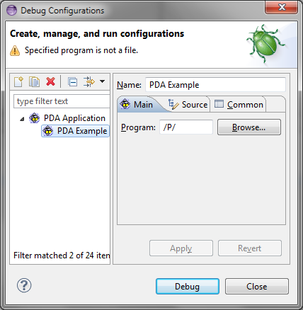 |
| Performance enhancements |
Significant performance enhancements have been made in the Platform user interface in this milestone. In particular, some applications
that were experiencing slow editor opening, closing, and switching are now much faster. Editor selection changes and the Open Resource
dialog have also been made faster. A number of leaks have been addressed to avoid long-running applications don't run out of memory.
|
| SWT for GTK3 |
32-bit and 64-bit GTK3 have joined the lineup of supported configurations for which SWT and Eclipse are routinely built. This implementation is currently early access. Everyone is encouraged to download and test these new builds, and to log bugs in bugzilla.
Note to load the SWT GTK3 libraries, you must set an environment variable SWT_GTK3 prior to starting Eclipse. (ex. export SWT_GTK3=1) 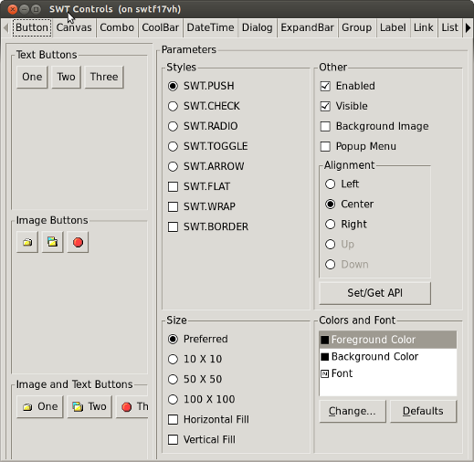 |
| Support for the Ant augment task | The Ant editor now has support for the Ant augment task. More information about the augment task can be found on the Apache help site here. |
| Detection of shared install changes |
When Eclipse is running in a read-only folder (also known as shared install) and the read-only
installation has changed (e.g. new plugins installed, new version of Eclipse installed), Eclipse
will now detect this change and warn that your personal additional plugins have been uninstalled.
In the next milestone, this warning will be replaced by a migration dialog allowing you to
reinstall your plugins.
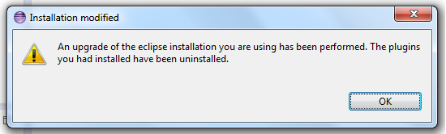 |
| Migration Wizard |
Building on the changes introduced in M5 to detect changes in shared installs, Eclipse now includes a migration wizard to help users through the re-ininstallation of their plug-ins.
This wizard is presented in two situations. First, when a read-only installation of Eclipse is being changed (i.e. Eclipse is being updated or plugins are added / remove), second when a new read-only installation of Eclipse is run for the first time. 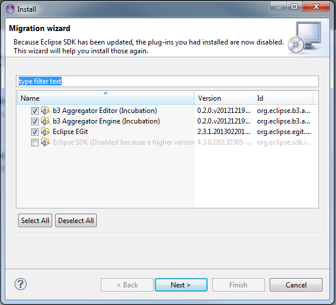 |
| BIDI Text Direction |
New API has been added to allow text direction to be set independent of the widget orientation. For more info see Snippet 364.
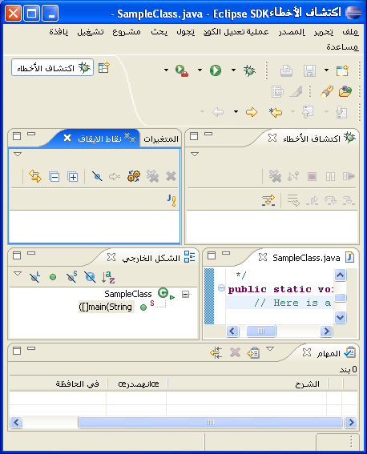 |
| New SWT color constant for hyperlinks |
A new constant (SWT_COLOR_LINK_FOREGROUND) has been added that will return the native color of hyperlinks on all platforms.
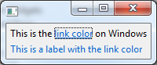 |
| Whole word option on File Search page |
The File Search page now allows to search for words via a new option:
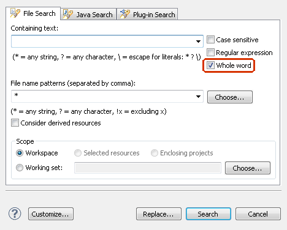 |
| Open Search dialog on last used page |
The Search dialog can now be configured to open on the last used page, instead of computing the best matching page based on the current selection:
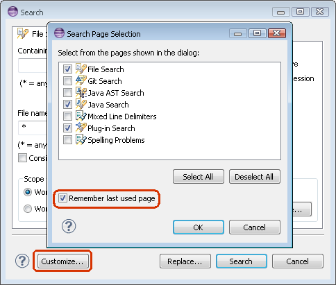 |
| Initial Eclipse 4 API released |
As was announced at EclipseCon this year, the first set of official API based on the new Eclipse
Platform 4 architecture is now available. This is the first step in allowing developers to use the
new simpler and more powerful mechanisms to build Eclipse plug-ins and applications.
This API is comprised of two basic concepts: The user interface model: The content of this model describes the structure of the user interface. The Eclipse Platform reacts to changes in this model by updating the presentation, and the complete model is now available through the new API. Note that the model represents everything on the screen and these elements can be modified by your code (see the example below). IEclipseContext / Dependency Injection (DI): Contexts are containers of UI runtime state including all the available services. The typical Eclipse Platform 4 pattern is that contributions are created and configured through dependency injection based on state and services found in the local context for that model element. Here are a few links to more information about the UI Model, the services and DI (the Javadoc and supporting Eclipse documentation will be available before Kepler is released): There is quite a lot of information already available for Eclipse Platform 4. While parts of the API are just being formalized now, most of the concepts and API existed in provisional form in previous Eclipse 4 releases. Just to give a taste of what working in a modeled UI is all about, here's a code snippet showing how to get a 'standard' Command handler to toggle the visibility of the 'Quick Access' text field that appears in the top trim. First we gain access to the model by getting the MApplication as a 'service'. Form there we can access the EModelService and use it to find the model element representing the search in the UI. Then it's just a simple matter of toggling the element's 'toBeRendered' flag to get it to (dis)appear.
public Object execute(ExecutionEvent event) throws ExecutionException {
IWorkbenchWindow window = HandlerUtil.getActiveWorkbenchWindowChecked(event);
MApplication theApp = (MApplication) window.getService(MApplication.class);
MWindow activeWin = theApp.getSelectedElement();
EModelService ms = activeWin.getContext().get(EModelService.class);
EPartService ps = activeWin.getContext().get(EPartService.class);
MToolControl search = (MToolControl) ms.find("SearchField", activeWin);
if (search != null) {
search.setToBeRendered(!search.isToBeRendered());
window.getShell().layout(true, true);
}
return null;
}
|
| XULRunner on 64-bit Windows | The browser widget now supports the embedding of XULRunner on Windows x86_64. |
| Open Resource dialog enhancements |
The Open Resource (Ctrl+Shift+R) dialog now offers direct access to the
Show In and Open With menus via drop-down buttons. On platforms that
support mnemonics, the buttons are also accessible via Alt+W and Alt+H.
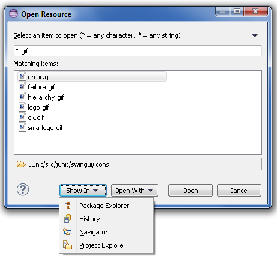 |
| Installation Remediation |
In order to help you deal with dependency errors while installing software, the various installation wizards now contain
a new wizard page. This page, called remediation, proposes various solutions in order to help you proceed
with the installation, even when the exact change you requested is not possible.
The picture below shows a screenshot of this page in action. In this particular case the user is trying to install something that is conflicting with what is installed, and the wizard gives the option to update what is installed so that the installation can proceed. 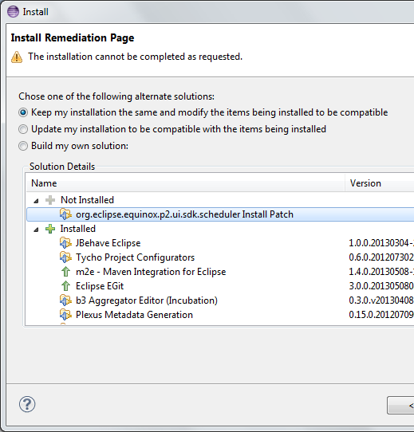 |